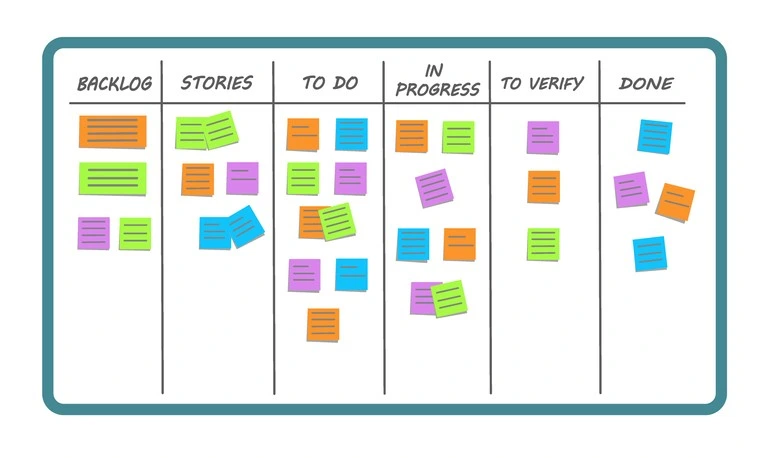

¿Qué es el método Kanban?
El método Kanban es un enfoque visual para la gestión de tareas y proyectos, que ayuda a optimizar el flujo de trabajo, mejorar la productividad y reducir el tiempo de espera. Es especialmente popular en entornos de desarrollo ágil y en la manufactura.
¿Cómo funciona Kanban?
Tablero Kanban: Se utiliza un tablero dividido en columnas que representan las etapas del proceso, como "Por hacer", "En progreso" y "Hecho".
Tarjetas: Cada tarea se representa con una tarjeta que contiene información clave. Las tarjetas se mueven entre columnas a medida que avanzan en el proceso.
Límites de trabajo en progreso (WIP): Se limita el número de tareas que pueden estar en progreso a la vez para evitar sobrecarga y mejorar el flujo de trabajo.
Visualización: El tablero permite ver el estado de las tareas en tiempo real, facilitando la identificación de cuellos de botella.
Mejora continua: Kanban promueve la mejora continua mediante la revisión constante del flujo de trabajo.
Beneficios del método Kanban:
Flexibilidad: Kanban es adaptable y no requiere una planificación extensa.
Visibilidad: Facilita la comunicación y toma de decisiones al proporcionar una vista clara de las tareas.
Reducción de tiempo de ciclo: Ayuda a reducir los tiempos de espera y mejora la velocidad con la que se completan las tareas.
Mejora continua: Fomenta el ajuste y la optimización constante del proceso.
Resumen:
En resumen, Kanban es un sistema visual que ayuda a gestionar el trabajo, mejorar la eficiencia y fomentar la mejora continua, ideal para equipos que buscan agilidad y flexibilidad.